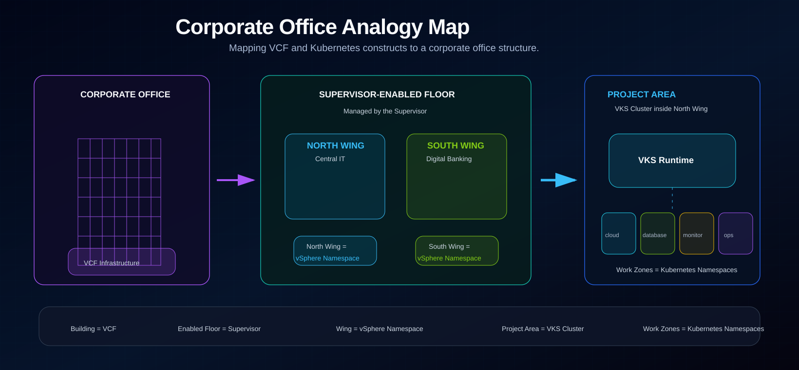
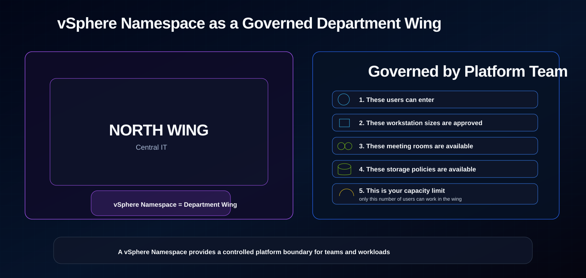
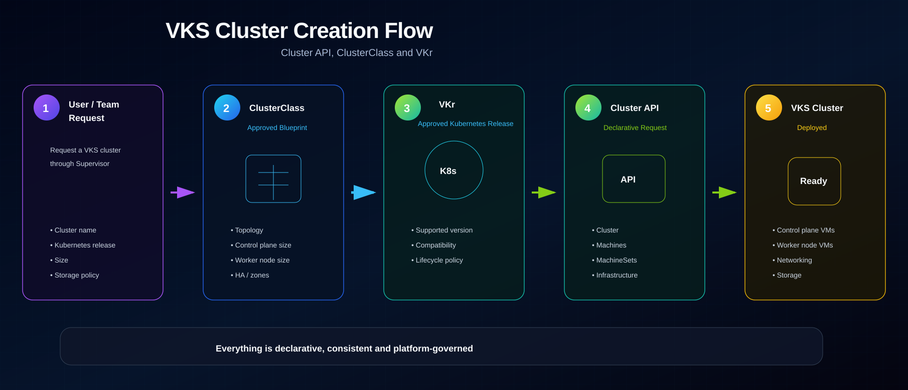
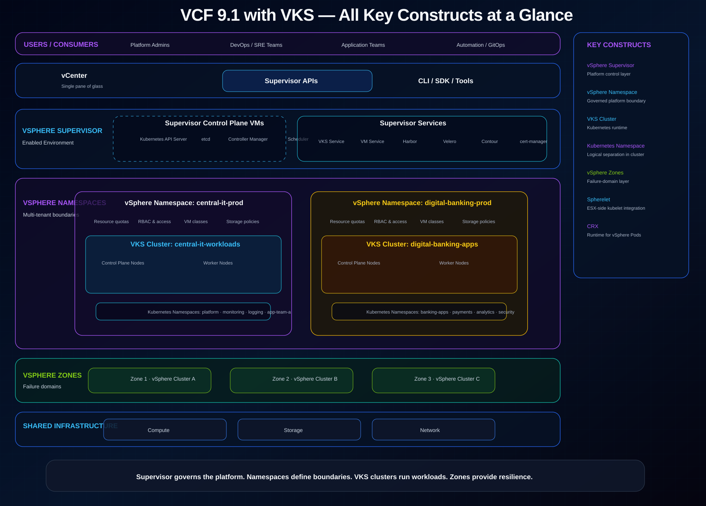

01 · Why this blog exists
VKS is Kubernetes delivered through a governed private cloud platform.
Blog 001 explained what VKS is. Blog 002 explained the Kubernetes foundations you need before learning VKS. Now we need to connect both worlds.
VKS is not simply “Kubernetes installed on vSphere.” It is Kubernetes delivered through a private cloud platform where vSphere, vCenter, ESX, networking, storage, namespaces, cluster lifecycle and services work together.
To understand VKS properly, you need to understand a few core platform concepts:
02 · The mental model
Think of a corporate office building.
Imagine a large corporate office building. The building already has floors, wings, work areas, power, network cabling, security access, shared services, a facilities team, storage areas and operating rules. That is similar to your VCF infrastructure.
Now imagine one floor in this office building has been enabled for modern self-service workspaces. Teams do not manually arrange power, network, access cards, meeting rooms and shared services every time they start a new project. Instead, the facilities team provides governed spaces with approved services. This is similar to vSphere Supervisor.
The floor is divided into wings: North Wing and South Wing. Each wing has its own access rules, resource limits, approved meeting rooms, approved workstation sizes and available shared services. That is similar to a vSphere Namespace.
Inside the North Wing, Central IT creates a dedicated project area for running cloud-native applications. That project area is the VKS cluster. Inside that project area, Central IT may create separate work zones such as cloud services, database services, monitoring and operations. Those work zones are like Kubernetes namespaces inside the VKS cluster.

03 · Core mapping
Use one clean hierarchy and avoid mixing technical layers.
| VCF / VKS concept | Corporate office analogy | Simple meaning |
|---|---|---|
| VCF infrastructure | Corporate office building | Compute, network, storage and management foundation. |
| vSphere Supervisor | Supervisor-enabled floor | Platform layer that exposes declarative services. |
| vSphere Namespace | North Wing / South Wing | Governed platform boundary for a team or tenant. |
| VKS Cluster | Project area inside a wing | Kubernetes runtime where application workloads run. |
| Kubernetes namespace | Work zone inside the project area | Logical separation inside the Kubernetes cluster. |
| VKr | Approved operating standard | Supported Kubernetes release package. |
| ClusterClass | Approved project-area blueprint | Standard cluster creation template. |
| VM Class | Approved workstation size | CPU and memory shape for nodes or VMs. |
| Storage Policy | Approved storage room type | Storage capability exposed to workloads. |
| Supervisor Services | Shared office services | VKS, VM Service, Velero, Harbor, Contour and others. |
A vSphere Namespace gives a team a governed platform boundary. A VKS cluster gives that team a Kubernetes runtime inside that boundary.
04 · vSphere Supervisor
The enabled floor exposes vSphere as a Kubernetes-style platform.
A vSphere Supervisor is a vSphere environment enabled for Kubernetes-style workload management. It allows platform teams and consumers to request infrastructure through declarative APIs.
Instead of manually asking someone to create VMs, attach storage, configure networking and install Kubernetes, a user or automation system can declare the desired state: a Kubernetes cluster, a version, a size, a storage policy and a namespace boundary.
The Supervisor uses dedicated control plane VMs. These control plane VMs provide the Kubernetes API endpoint and run core infrastructure services for the Supervisor. They coordinate requests such as creating namespaces, creating VKS clusters, creating VMs, applying storage policy, exposing services and scaling clusters.
05 · vSphere Namespace
A vSphere Namespace is a department wing, not a Kubernetes namespace.
A vSphere Namespace is one of the most important VKS concepts. It is a platform-level boundary where VKS clusters, VM Service workloads, vSphere Pods and Supervisor Services can run.
It can define who has access, how much CPU and memory can be used, which storage policies are available, which VM classes are available, which content libraries are available, and which services are allowed.
In the corporate office analogy, Central IT does not get unlimited access to the entire office building. It receives a controlled wing with rules:
- These users can enter.
- These workstation sizes are approved.
- These meeting rooms are available.
- These storage policies are available.
- These shared services are enabled.
- This is your capacity limit, meaning only this number of users can work in the wing.

06 · Namespace vs namespace
One namespace exists around the cluster. The other exists inside the cluster.
| Concept | Meaning |
|---|---|
| vSphere Namespace | Platform-level boundary on Supervisor. |
| Kubernetes namespace | Logical separation inside a Kubernetes cluster. |
- vSphere Namespace: central-it-prod
- VKS Cluster: central-it-vks-prod
- Kubernetes namespaces: cloud-services, database-services, monitoring, operations
07 · vSphere Zones
Zones are office blocks and failure domains.
A vSphere Zone is a logical grouping of vSphere clusters. It helps with availability and failure isolation. In a simple design, you may have one zone. In a more resilient design, you may have three zones.
Think of vSphere Zones as separate office blocks or building sections: Block A, Block B and Block C. If Block A has a problem, the goal is that workloads designed across Blocks B and C can continue running, depending on the application and platform design.
For platform architects, zones matter because they influence control plane placement, workload placement, storage policy design, failure-domain planning, namespace resource distribution and high availability strategy.
08 · VKS Cluster
The VKS cluster is the project area inside the wing.
A VKS cluster is the Kubernetes environment created for an application team inside a vSphere Namespace. The vSphere Namespace is the department wing. The VKS cluster is the project area inside that wing.
Inside the VKS cluster, the application team deploys normal Kubernetes objects: Pods, Deployments, Services, ConfigMaps, Secrets, Ingress, PersistentVolumeClaims and NetworkPolicies.
The platform team still controls which wing the project area belongs to, which Kubernetes releases are allowed, which cluster blueprints are approved, which workstation sizes are available, which storage policies are exposed, which network paths are available and who can enter the wing. But inside the VKS cluster, the application team organizes and runs its Kubernetes workloads.
09 · Core constructs
VKr, Cluster API, ClusterClass, VM Class and Storage Policy make the platform controlled.
VKr: the approved Kubernetes release package
VKr means VMware vSphere Kubernetes release. In simple terms, VKr represents the approved Kubernetes release package available for VKS clusters. A Kubernetes version is the software version; VKr is the approved software release package.
Cluster API: the project-area request system
VKS uses Cluster API, commonly called CAPI, for declarative lifecycle management. Instead of manually creating every VM and installing Kubernetes step by step, the platform works from a desired cluster definition.
ClusterClass: the approved project-area blueprint
A ClusterClass is a reusable cluster blueprint. It helps platform teams standardize how VKS clusters are created so every team does not invent its own control plane size, worker node size, network pattern and lifecycle behavior.
VM Class: the approved workstation size
A VM Class defines the compute shape of a VM. In VKS, VM Classes matter because VKS cluster nodes are virtual machines. This lets the platform team control approved control plane and worker node sizes.
Storage Policy: the approved storage room type
A Storage Policy defines what storage capability is available to workloads. The application team asks for storage through Kubernetes, while the platform decides which physical storage capability backs that request.

10 · Supervisor Services, VM Service and Velero
Supervisor Services are shared office services.
Supervisor Services are services made available through the Supervisor. Examples include VKS, VM Service, Velero, Harbor, Contour, MinIO, Argo CD and cert-manager. Not every environment will enable every service. A platform team should enable only what the operating model needs.
- Security desk
- Mailing room
- Backup office
- Pantry area
- Relaxation room
VKS Service
The VKS Service is what allows teams to deploy Kubernetes clusters through the Supervisor platform. VKS provides conformant Kubernetes clusters and integrates cluster lifecycle with the vSphere and VCF platform.
VM Service
The VM Service allows teams to define and manage virtual machines using a declarative Kubernetes-style API. This is useful when a platform must support both modern Kubernetes workloads and traditional virtual machine workloads.
- I need a private work area.
- I need capacity for this many users.
- I need this approved workstation size.
- I need access to approved meeting rooms.
- I need the area ready for use.
Velero
Velero provides backup and restore capabilities for Kubernetes workloads. In a VKS context, Velero can help protect application workloads and support recovery scenarios.
11 · vSphere Pods, Spherelet and CRX
Supervisor-native runtime constructs are not the same as Pods inside a VKS cluster.
A vSphere Pod is not the same as a Pod running inside a VKS workload cluster. A vSphere Pod runs directly on Supervisor using a lightweight VM-like construct. A normal application Pod usually runs inside a VKS cluster.
vSphere Pod
A vSphere Pod is a lightweight VM designed to run one or more Linux containers. It provides stronger isolation than a traditional shared-kernel container model because each vSphere Pod has its own Linux kernel.
Spherelet
Spherelet is a VMware implementation of kubelet that runs natively on ESX hosts. It allows the Supervisor control plane to communicate with ESX hosts and manage vSphere Pods.
CRX
CRX stands for Container Runtime Executive. It is the runtime used by vSphere Pods. CRX uses hardware virtualization to run containers inside a lightweight VM-like construct.
| Area | vSphere Pod | Pod inside VKS Cluster |
|---|---|---|
| Runs where? | Directly on Supervisor. | Inside a VKS workload cluster. |
| Managed by | Supervisor control plane. | VKS cluster control plane. |
| Runtime model | CRX lightweight VM-like runtime. | Standard Kubernetes runtime inside cluster nodes. |
| Main use | Supervisor-level pod capability. | Normal application workloads. |
12 · Technical architecture overview
All key constructs in one view.
The technical view below removes the office analogy and shows the actual architecture layers: users and tools, vCenter and Supervisor APIs, Supervisor control plane VMs, Supervisor Services, vSphere Namespaces, VKS clusters, Kubernetes namespaces, vSphere Zones and the shared compute, storage and network foundation.

13 · End-to-end VKS flow
From platform boundary to running Kubernetes cluster.
- Platform team enables Supervisor.
- Platform team creates vSphere Namespaces.
- Platform team assigns quotas, permissions, VM Classes and Storage Policies.
- VKS Service is available through Supervisor.
- A user requests a VKS cluster.
- Cluster API represents the desired cluster state.
- vSphere creates the required control plane and worker node VMs.
- The VKS cluster becomes available.
- Application teams deploy Kubernetes workloads into the VKS cluster.
14 · Read the architecture in YAML
The YAML is illustrative, not copy-paste universal.
Exact API versions, ClusterClass names, VM Classes, image names and supported Kubernetes versions depend on your VCF and VKS environment.
apiVersion: cluster.x-k8s.io/v1beta1
kind: Cluster
metadata:
name: payment-vks-cluster
namespace: central-it-prod
spec:
topology:
class: <approved-cluster-class>
version: <supported-vkr-version>
controlPlane:
replicas: 3
workers:
machineDeployments:
- name: payment-api-workers
replicas: 4
---
apiVersion: vmoperator.vmware.com/v1alpha2
kind: VirtualMachine
metadata:
name: reporting-db-vm
namespace: central-it-prod
spec:
className: <approved-vm-class>
imageName: <approved-content-library-image>
powerState: PoweredOn15 · VKS compared with other Kubernetes models
VKS brings Kubernetes into the VCF operating model.
| Area | VKS on VCF | Upstream Kubernetes | OpenShift | EKS / AKS / GKE |
|---|---|---|---|---|
| Cluster lifecycle | Managed through Supervisor, VKS and CAPI. | User/operator-managed. | OpenShift lifecycle tooling. | Cloud provider managed. |
| Infrastructure boundary | vSphere Namespace. | Usually external to Kubernetes. | Project/namespace plus platform constructs. | Account, subscription or project boundary. |
| Node infrastructure | vSphere VMs. | Any supported infrastructure. | Platform-managed nodes. | Cloud instances. |
| Kubernetes version control | VKr / supported VKS releases. | User-selected. | Vendor-supported releases. | Cloud-supported versions. |
| Storage integration | vSphere storage policies and CSI. | CSI-dependent. | OpenShift storage integrations. | Cloud storage classes. |
| VM and Kubernetes together | VM Service + VKS on Supervisor. | Separate tooling usually required. | OpenShift Virtualization optional. | Usually separate services. |
16 · Common misunderstandings
Most confusion comes from mixing boundaries.
“Supervisor is just another Kubernetes cluster.”
Not exactly. Supervisor exposes Kubernetes-style APIs, but its role is to connect vSphere infrastructure with platform services such as VKS, VM Service, namespaces and lifecycle operations.
“A vSphere Namespace is the same as a Kubernetes namespace.”
No. A Kubernetes namespace separates objects inside a Kubernetes cluster. A vSphere Namespace defines a platform boundary around services, clusters, VMs, storage policies, quotas and permissions.
“A VKS cluster is the team itself.”
No. The team is the owner or consumer. The VKS cluster is the Kubernetes runtime created for that team inside a vSphere Namespace.
“Application teams should deploy directly to vSphere Pods.”
Usually no. For most application teams, the preferred target is a VKS workload cluster.
“VKr is just a Kubernetes version number.”
Not quite. VKr is better understood as an approved Kubernetes release package for the VKS environment.
17 · Knowledge reinforcement
Check the concepts before moving on.
Question 1
A team wants to create a Kubernetes cluster on VCF using VKS. Where should the platform team first define resource boundaries, storage access and permissions?
Question 2
What is the best description of a VKS cluster?
Question 3
What does VKr control?
Question 4
Why is Cluster API important in VKS?
Question 5
A vSphere Pod is running directly on Supervisor. An ESX host must enter maintenance mode. Which statement is most accurate?
18 · Architecture challenge
Design a VKS platform for financial services teams.
A financial services organization wants a private Kubernetes platform for three groups: Payments, Risk Analytics and Customer Reporting.
They need separate resource boundaries, controlled Kubernetes versions, approved storage tiers, optional VM-based database workloads, high availability across infrastructure zones and a future backup and restore model.
- Create one vSphere Namespace per major team or operating boundary.
- Expose only approved VM Classes and Storage Policies.
- Use VKS clusters for normal Kubernetes workloads.
- Use VKr to control available Kubernetes versions.
- Use ClusterClass to standardize cluster patterns.
- Use VM Service only where VM-based workloads are justified.
- Use Velero planning for backup and restore.
- Avoid direct vSphere Pod usage unless there is a specific platform-level use case.
19 · Key takeaways
The strongest VKS designs separate boundaries, lifecycle and workload ownership.
- Supervisor makes vSphere consumable through Kubernetes-style APIs.
- vSphere Namespace is a real platform boundary, not just a Kubernetes label.
- VKS cluster is the Kubernetes runtime created inside a vSphere Namespace.
- Kubernetes namespaces live inside the VKS cluster.
- VKr controls the supported Kubernetes release choices for VKS clusters.
- Cluster API gives VKS its declarative cluster lifecycle model.
- ClusterClass standardizes how VKS clusters are created.
- VM Class controls node and VM sizing choices.
- Storage Policy controls what storage capabilities are available to workloads.
- Spherelet and CRX are Supervisor capabilities and should not be confused with normal Pods inside VKS clusters.